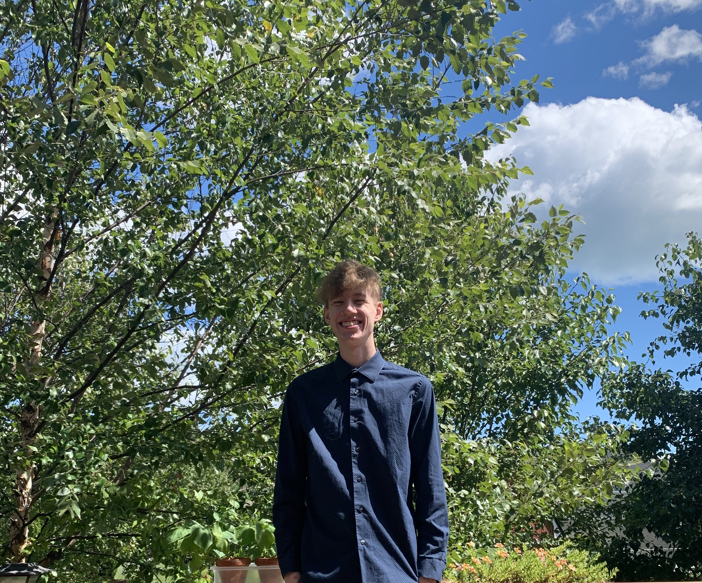
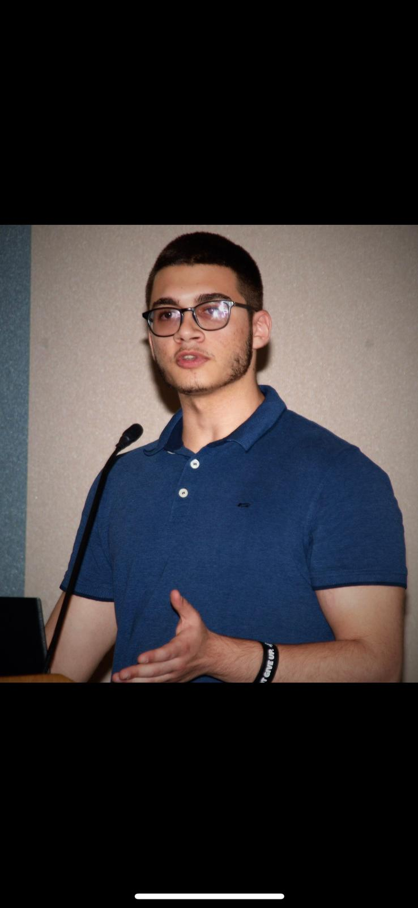

I am in my third year at Wayne State University, pursuing a BSCS with a minor in Mathematics. I hope to get an internship
and then a job as a Software Engineer, but there are so many possibilities with Computer Science that I'm excited to learn and explore.
In my free time, I make music and am currently learning to produce music. I also enjoy creative writing and spending time exploring
different art forms!
Maher Abdou Aly

I am a senior in Computer Science at Wayne State University and hope to get a software engineer intern
position before graduating. In my free time, I like to workout, watch soccer (Chelsea fan),
listen to audiobooks, and play Warzone.
Mark Slattery
I am a senior pursuing a BSCS degree at Wayne State University, and I hope to put that degree to work as
a software engineer in the future.
In my limited free time, I enjoy skateboarding, writing music, playing guitar (13 years!), photography,
and drawing.
Nataly Arredondo
I am a senior at Wayne State University studying computer science, interested in cyber security. I’m originally
from Texas, moved here about 2 years ago, and I really must say I love Michigan. Some of my hobbies are reading,
listening to podcasts, my favorites are about solved murders or criminals, I really enjoy doing things outdoors,
and of course playing video games.
Nnamdi Monwe
I'm Nnamdi, a Computer Science major with an insatiable drive for building and engineering things. I am
a huge robotics nerd who likes to tinker with electronics and program stuff.
Through my time in college I have founded and managed the University's robotics club, partaken in
undergraduate research, and helped grad students work on various software/hardware related issues.
Thank you for stopping by!